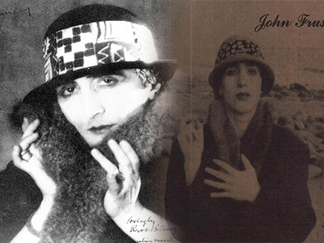
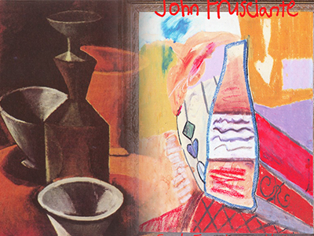
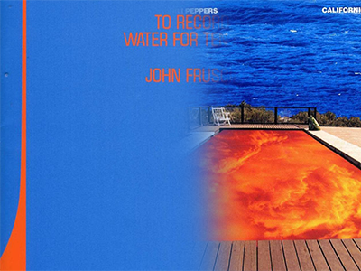
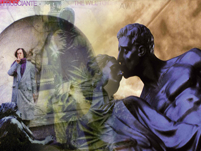
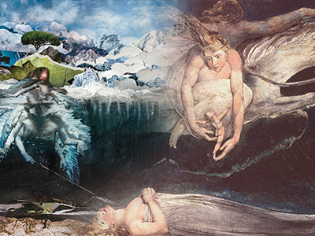
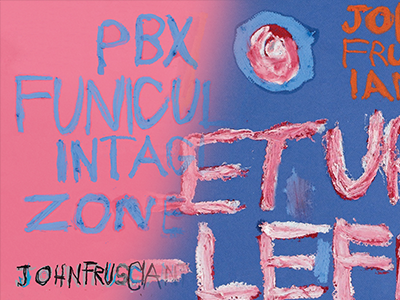
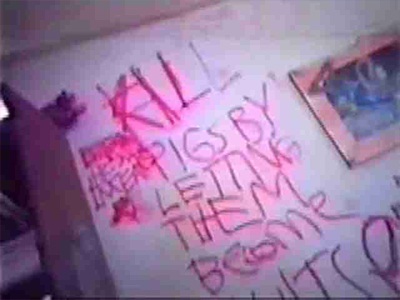
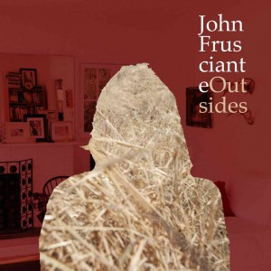

Zamiast graficznych petard, które skończą kiedyś na fotoblogach typu „Kultowe okładki z kociakami” – nawiązania do sztuki i prace ulubionych artystów lub przyjaciół. Zagadkowe kamuflaże, kolaże i nieostre zdjęcia. Profesjonalna pomoc mile widziana, ale zdecydowanie trzymana na drugim planie. Sporo twórczości własnej, a wszystko opisane osobiście nieco koślawym pismem. Taki jest przepis Johna Frusciante na okładkę płyty.
Trudno byłoby znaleźć muzyka czy zespół, którego płyty mają „trudniejsze” , nie zapadające w pamięć okładki. Zdecydowanie bardziej pasuje do nich określenie „osobiste” niż „komercyjne”, bo w ich projektach kryje się sporo informacji o życiu muzyka, jego fascynacjach, artystycznych koneksjach i twórczej wszechstronności.
Maskara i rękawiczki
Stosunkowo charakterystyczną okładką może pochwalić się solowy debiut Johna „Niandra LaDes/Usually Just a T-shirt” (1994). Na czarno-białym zdjęciu wykonanym przez ówczesną dziewczynę Johna, Toni Oswald, widzimy Johna przebranego i ucharakteryzowanego na kobietę. Biorąc pod uwagę pomysły Red Hotów (teledysk do piosenki „My Friends” w wersji Antona Corbijna czy koncert-niespodzianka dla Clary Balzary, podczas którego udawali Spice Girls) nie byłoby w tym nic szczególnego, ale zdjęcie Johna to coś więcej niż wygłup w stylu drag queen. Jego stylizacja to udana próba upodobnienia się do Rrose Sèlavy – kobiecego alter ego Marcela Duchampa. Francuskiego dadaistę w latach 20. XX wieku uwieczniał na zdjęciach w kobiecym przebraniu inny sławny artysta – Man Ray. Nazwisko Rrose Sèlavy pojawiało się także pod wieloma dziełami Duchampa. Jeśli porównamy okładkę „Niandry” chociażby ze zdjęciem „Rrose” ze zbiorów Filadelfijskiego Muzeum Sztuki.

Podobieństwo jest uderzające.
Zdjęcie pochodzi z planu wyreżyserowanego przez Toni Oswald artystycznego filmu „Desert in Shape” – historii o dziewczyny mającej obsesję na punkcie francuskiego dadaisty. Jeśli dodamy do tego wielokrotnie deklarowany przez Johna podziw dla twórczości Marcela Duchampa oraz fascynację biseksualizmem jako elementem artystycznego emploi choćby Davida Bowiego czy
drag queen Divine nic już nie powinno nas zadziwić…
Warto jeszcze dodać, że art directorem „Niandry” był Martyn Atkins, projektant grafiki znany ze współpracy z wieloma artystami na czele z grupą Depeche Mode i Johnnym Cashem, współautor kultowej okładki płyty „Closer” Joy Division.
Martwa natura
„Smile From The Streets You Hold”(1997) to pierwsza na której okładce pojawiła się grafika stworzona własnoręcznie przez Johna – reprodukcja obrazu, który namalował dla Toni Oswald, jeszcze przed opuszczeniem RHCP w 1992 roku. Ekspresyjna, barwna martwa natura – klasyczny motyw pojawiający się w malarstwie różnych epok i różnych artystów, by wymienić choćby Vincenta van Gogha, Paula Cezanne`a czy Pabla Picassa. Czy była to próba zmierzenia się z artystycznymi idolami? Na to pytanie mógłby chyba odpowiedzieć tylko sam autor… Ten obraz trudno uznać za szczególnie charakterystyczny dla malarskiej twórczości Frusciante, generalnie bliższej stylistycznie abstrakcyjnemu neoekspresjonizmowi. Niewątpliwie jednak okładka SFTSYH odzwierciedla ten okres jego życia, gdy zaniedbał muzykę na rzecz malowania oraz intensywnego studiowania sztuki i literatury, a niestety także dla narkotykowego nałogu.

Najskromniejsza, naznaczona ewidentnie ideową wymową swojej zawartości, jest okładka „Record Only Water For Ten Days” (2001). Patrząc na niebieską, kojarzącą się z tytułową wodą płaszczyznę, urozmaiconą jedynie pomarańczowymi literami tytułu i graficzną linią trudno uwierzyć, że w jej projektowaniu brał udział Lawrence Azzerad – ten sam, który nieco wcześniej wspomagał RHCP w tworzeniu oprawy graficznej do „Californication”. Choć jeśli spojrzy się na obie równocześnie to rodzi się podejrzenie, że basen i woda jednak mają ze sobą coś wspólnego…

Równie oszczędny w wyrazie jest „From The Sounds Inside” (2001)– internetowy album, którego tytuł i okładkę wybrali w głosowaniu fani Johna Frusciante: czarno-białe zdjęcie uśmiechniętego Johna, proste liternictwo. Nietypowy sposób powstania zaowocował jedynym (poza „przebieraną” „Niandrą”) projektem w którym na froncie znalazł się portret muzyka, ewidentnie unikającego tego rodzaju ekspozycji.
Nowojorska bohema
W 2004 roku John wrócił do flirtu z wielką sztuką na swoich okładkach – dzięki kontaktom z artystyczną familią Schnablów. „Shadows Collide With The People” (2004) zdobi zdjęcie ośnieżonych górskich szczytów, które według Johna Frusciante wyszukała jego dziewczyna – Stella Schnabel, córka reżysera i malarza Juliana Schnabla (z kolei jego obraz i zdjęcia, które osobiście zrobił Peppersom trafiły z na płytę „By the Way”). Jednak prawdziwym klejnotem jest tytuł namalowany przez Rene Ricarda, amerykańskiego poetę, krytyka sztuki i malarza. „Kiedy powstał tytuł – opowiadał Frusciante w 2004 roku dziennikarzowi francuskiego Rock Mag – poprosiliśmy Ricarda, by namalował go na tle tego krajobrazu.” W tym samym wywiadzie John pochwalił się ozdobioną przez artystę kurtką – na płycie się więc nie skończyło…
Ricard, w młodości protegowany Andy`ego Warhola, aktor w jego kultowych filmach „Kitchen” i „Chelsea Girls”, później sam z powodzeniem promował takich artystów jak Julian Schnabel czy Basquiat. Wychwalał w swoich recenzjach zdjęcia Roberta Mappelthorpe`a i namawiał Patti Smith, by nie rezygnowała z rysowania pomimo rozwijającej się muzycznej kariery…. Czy można dziwić się Johnowi, że chciał mieć na swojej płycie coś stworzonego przez tak barwną, kultową w USA postać? Kibicował też zapewne temu pomysłowi Vincent Gallo, który pod koniec lat 70., w czasach gdy mieszkał w Nowym Jorku, grał z Basquiatem w zespole Gray, organizował uliczne happeningi i występował w artystycznych filmach – znał więc świetnie ludzi z kręgu sportretowanego później przez Juliana Schnabla w filmie „Basquiat”.

Charakterystyczna dla stylu Rene Ricarda fuzja poezji i malarstwa (http://vitoschnabel.com/artists/rene—ricard) świetnie sprawdziła się w wypadku okładki SCWTP, a wydaje się że także wpłynęła na rozwiązania graficzne, które Frusciante wykorzystywał na swoich późniejszych płytach. Na wkładce płyty pojawiły się również zdjęcia wykonane przez Vincenta Gallo, a całość „ogarniał” graficznie Richard Scane Goodheart – projektant m. in. okładki „Greatest Hits” RHCP.
Wycieczka na cmentarz
Kto dotrzymał kroku Johnowi Frusciante podczas wydawania słynnej „szóstki” w 2004? Była to w przypadku wszystkich sześciu płyt Lola Montes Schnabel, siostra Stelli. Ta 24-letnia wówczas malarka i fotografka, wykonała prace na okładki „Will To Death”, „Curtains”, „Inside Of Emptines” a także płyty z Joshem Klinghoferem „ In The Heart Of silence”, „Automatic Writing” Ataxii i EP-ki „DC EP”. Szczególnie ciekawa wydaje się w tym zestawie okładka „Will To Death” przedstawiająca włoskiego artystę Luigiego Ontaniego na cmentarzu (cmentarny motyw w interpretacji Loli pojawia się także na okładce wydanej w 2007 „AWII”(2007)). Niestety można jedynie spekulować czy jest to często odwiedzany przez Lolę i wskazywany przez nią jako źródło inspiracji Cimentario Monumentale w Mediolanie.

Sam Luigi Ontani, znany z kontrowersyjnych fotograficznych autoportretów (np. jako Bachus czy wilczyca kapitolińska) tym razem wygląda jak romantyczny poeta lub malarz pielgrzymujący do Włoch w poszukiwaniu natchnienia.
„Szóstka” była także początkiem współpracy Johna z fotografem i filmowcem Mike`m Piscitellim, przed którego obiektywem stawali m. in. Hugh Hefner, Rick Rubin, Slash, Tommy Lee czy Dr. Dre.
Najwyższa sfera nieba
„Empyrean”(2009) to kolejna płyty, której okładka rozpala wyobraźnię fanów Johna i pozwala na niekończące się interpretacje pod tytułem „co artysta chciał przez to powiedzieć”? Praca, która ją zdobi to dzieło Sarah Sitkin, artystki i fotografki, której wizualny język mocno nasycony jest symbolami, kiczem i makabrą. (www.sarahsitkin.com) Skąd pomysł na współpracę z Sarah? Biorąc pod uwagę, że ma też ona na swoim koncie współpracę z Swahili Blonde (http://www.sarahsitkin.com/post/17595288015/heathercvar-swahili-blonde-makeup-artist) i innymi artystami wytwórni Neurotic Yell Records (polecam obejrzenie video „50 Fingers” dla grupy Little Red Lung, które daje niezłe wyobrażenie o stylu Sitkin) można przypuszczać, że po raz kolejny było to typowe dla sięgnięcie po pomoc „kreatywnych zaprzyjaźnionych sił” – tym razem jednak już nie z kręgu RHCP czy Ricka Rubina.
Kolaż przedstawiający pogrzebanego mężczyznę nad którym unosi się anioł i z którego grobu prowadzą do znajdującego się w niebie pałacu spiralne schody, aż prosi się o religijne skojarzenia ze zmartwychwstaniem, wniebowstąpieniem i zbawieniem. Bywa także interpretowany w kontekście „Boskiej Komedii” Dantego, gdzie „empireum”, zgodnie ze średniowieczną kosmologią jest najwyższą sferą nieba, siedzibą Boga. W pieśni XXX Raju„Boskiej Komedii” mamy całą masę symboli, które odnajdziemy na okładce „Empyrean”: schody wiodące do nieba, białe miasto, rzekę. Związek z „Boską komedią” nasuwa też kompozycja okładki zbieżna z niektórymi ilustracjami wykonanych do tej ksiązki przez angielskiego artystę Williama Blake`a. (http://www.wikipaintings.org/en/william-blake#supersized-illustrations-to-dante-the-192871)

Sarah Sitkin wykonała też na potrzeby „Empyrean” sesję fotograficzną w której John Frusciante wciela się w anioła. Rola „zmarłego” przypadła zaś Joshowi Klinghoferowi.
Zrób to sam
Okładki najnowszych wydawnictw Johna Frusciante zdają się potwierdzać jego dążenie do artystycznej samowystarczalności w każdej możliwej sferze. Album „PBX Funicular Intaglio Zone” (oraz towarzysząca mu EP „Letur–Lefr”) przyniósł kolejną zmianę – nie tylko w kwestii zawartości muzycznej. Ostre kolory, napisy w stylu Rene Ricarda i naiwne, jakby dziecięce rysunki to dzieło samego Frusciante, w którego graficznym opanowaniu pomagał mu Julian Chavez. Przy tej płycie również wykorzystane zostały zdjęcia Mike`a Piscitellego.
Zagorzałym „frusciantystom” przypomnieć się przy okazji tych dwóch okładek mogą też graffiti uwiecznione w filmie „Stuff” – zrobione przez Frusciante na ścianach jego własnego domu.


W tym miejscu wypadałoby także przypomnieć, że odręczne pismo Johna pojawia się na wkładkach niemal wszystkich jego płyt. Ten zabieg uzasadnił dość interesująco w opublikowanych w 2004 roku na swojej stronie internetowej odpowiedziach na pytania fanów. „Powodem dla którego używam odręcznego pisma jest, to, że widać w nim na wiele sposobów osobowość. Jeśli widzisz czyjeś pismo, możesz wiele się dowiedzieć o jego charakterze. Chociaż nie znam włoskiego, uwielbiam na przykład patrzeć na notatki Leonardo da Vinci. Są takie piękne i to wszystko co podziwiam w jego malarstwie, rysunkach, filozofii, odnajduję w jego odręcznym piśmie. Z tego samego powodu lubię swoje pismo. Dla mnie ono wygląda jak moja muzyka.”
Okładka najnowszej EP „Outsides” (2013) również oparta jest na artystycznej koncepcji Johna, a stworzona przy wsparciu fotografa Chrisa Shontinga – podobnie jak Piscitelli doświadczonego w fotografii sesyjnej, prasowej i często fotografującego muzyków – m. in. Lemmy`ego z Mötorhead czy legendarnego metalowca Wino. Przeciętne wnętrze amerykańskiego domu ze zdjęciami na kominku i shakerskim drewnianym krzesłem, a pośrodku John, a właściwie jego sylwetka wypełniona zdjęciem suchej, pożółkłej trawy. Czyli interpretując najprościej „outside” jest „inside”…

s